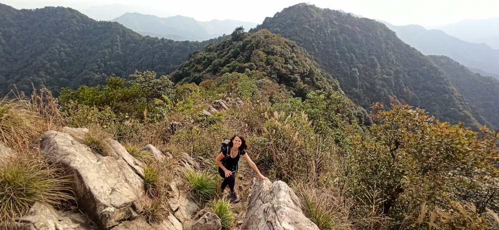
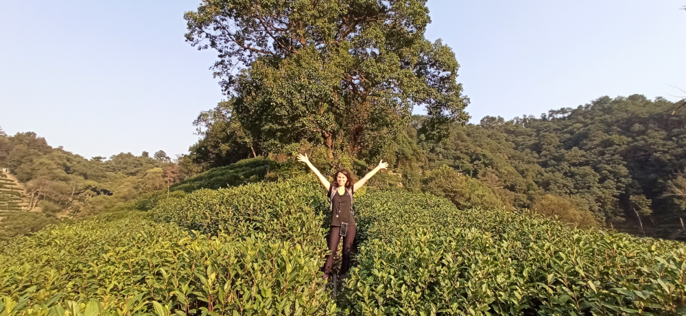

About The Minimalist Hiker
The Minimalist Hiker is here to help anyone feeling a bit overwhelmed at the idea of going alone at the discovery of the Chinese countryside. It is for the person who wants to escape Shanghai for a day, a weekend or longer to spend more time in nature. It is for everyone longing to walk through forests, climb mountains, swim in wild rivers or walk barefoot on the beach.
Here you can find a compilation of hiking and biking adventures that can be planned easily. All information needed are made available in one spot, so that you don’t have to spend hours doing research on finding the best places to go and figuring out all the logistics to get there.
The main mission of The Minimalist Hiker is to inspire anyone to spend more time outdoor.
Hiking made easy
Everything you need to design great adventures the simple way
Some of my adventures


About Me
I am Mylene, an outdoor lover, a minimalist and an adventure seeker. Ever since I left my little hometown in North-East France, I have always been looking for my next place to explore. It started mainly with going solo at the discoveries of all the beautiful European cities (Paris, Prague, Vienna, Venice, Berlin, Copenhagen, London and many more!).
However, the big shift appeared when I moved to the United States of America for my first job. I spent over a year using all of my free time to explore the beautiful wild places of New England. This is when I fell in love with nature! I discovered its magical power to make me feel at peace and show me the simplicity of life. When I am outside, with everything I need for the day or longer on my back, nothing is impossible. I feel completely free, relieved from all worries, going back to the basic and walking towards my goal one step at a time. I enjoy being outdoor and experiencing the four seasons to the fullest. Nothing beats walking under the plum trees in full bloom, lying down by a lake for an afternoon nap feeling the sun warming my skin, walking in the forest at the peak of fall foliage or spending all day playing in the snow, noticing the cold air entering my lungs and my chins getting redder. I enjoy climbing mountains to see the beauty of the world from above, walking barefoot in the sand while listening to the sound of the waves, waking up in a tent seeing the sun shining through the canvas, drinking a warm tea after spending all day in the rain or going star gazing far away from any light pollution and dreaming of all the adventures that are still to come.
I had the chance to go on many amazing journeys, ranging from two weeks wild camping in Haiwai, solo biking the Great Glenn Way in Scotland, spending several weeks hiking in Kyrgyzstan, biking the Clare County of Ireland, winter hiking by -20°C in the White Mountains of New Hampshire… I also had many more small trips uncovering all the natural treasures lying right next to where I lived, with many day hikes or weekend biking trips in America, England, France and now China.
When I arrived in Shanghai, 8 years ago, I felt this big need to escape the city as often as possible to relax in the countryside. Feeling the happiest when surrounded by trees, high on a summit top or relaxing by the beach, it was not easy to find peace in this huge megalopolis. I was spending my time researching about all the beautiful places China had to offer, but felt overwhelmed and a bit scared at the idea of going out there on my own. After all these years, I am finally fully comfortable in doing it! With The Minimalist Hiker, my goal is to share all the knowledge and experience I have gained by hiking or biking in China. I want to introduce all the amazing places that are so close to us and all the tools that can be used to make each outing as easy as possible.